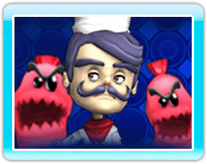

7 |
Comment jouer |
 |
|
Dans BurgerTime World Tour, vous incarnez le Chef Peter, un gentil cuisinier qui voyage à travers le monde, confectionnant des hamburgers tout en évitant les attaques des ingrédients de cuisine rebelles. L'objectif du jeu est de terminer tous les hamburgers d'un niveau avant que le Chef Peter n'ait perdu toutes ses vies à cause des attaques ennemies et des obstacles.
Les ingrédients des hamburgers sont empilés dans les multiples niveaux de chaque environnement. Lorsque le Chef Peter passe sur un ingrédient (un steak haché, un pain, une tranche de tomate etc.) celui-ci tombe au niveau inférieur. Si l'ingrédient qui tombe atterrit sur un autre ingrédient, cela produit une réaction en chaîne, qui fait également tomber l'ingrédient inférieur vers le bas. L'objectif de chaque niveau est de continuer à faire descendre les ingrédients de hamburger en passant dessus, jusqu'à ce que tous les ingrédients soient empilés sur le pain du bas, ce qui complète alors le hamburger. En plus de gagner des points en terminant des hamburgers, les joueurs en gagnent également lorsqu'ils tuent des ennemis en leur lâchant des ingrédients dessus, ainsi que lorsqu'ils finissent un niveau. Un joueur qui termine un niveau en peu de temps gagne plus de points qu'un joueur prenant plus de temps pour compléter ce même niveau. |
 |
 |